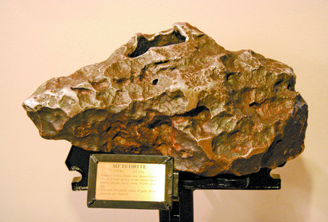
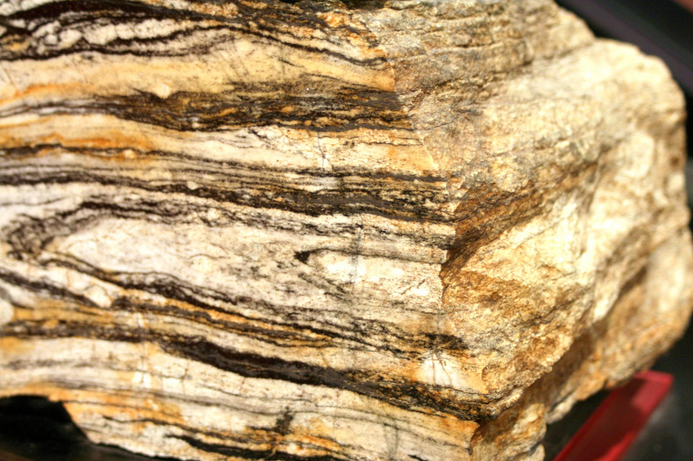
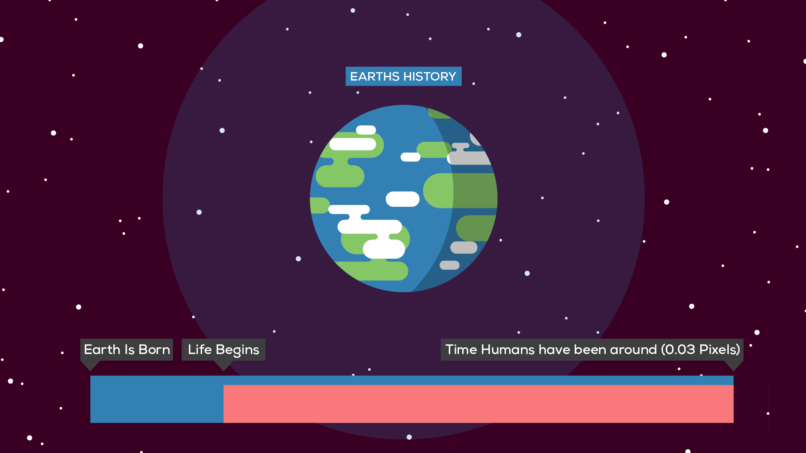
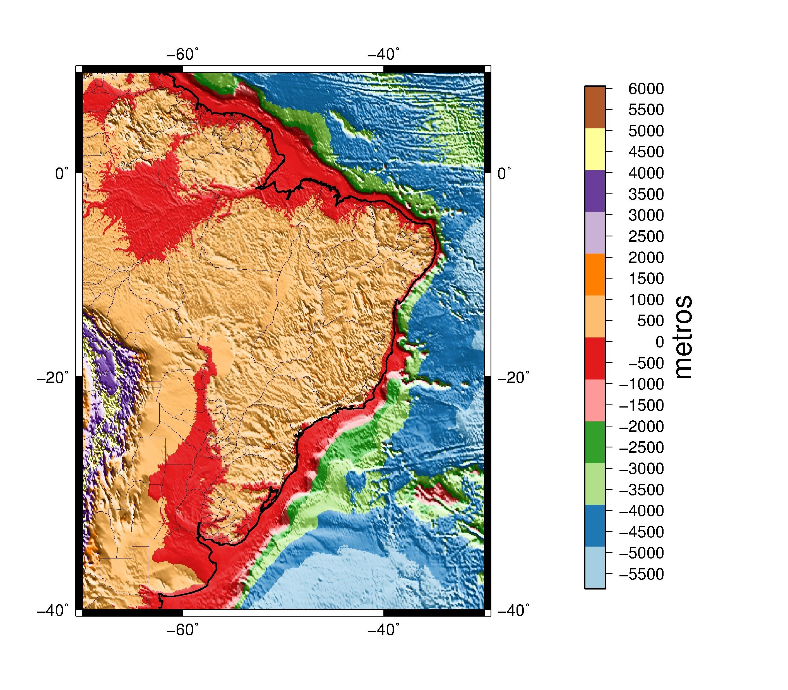
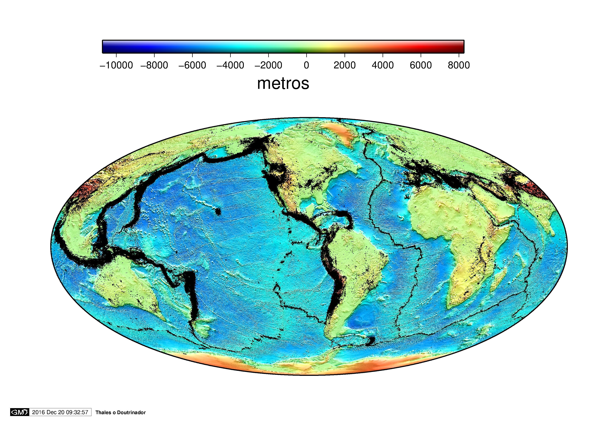

Sabemos hoje que a Terra tem 4,54 bilhões de anos, mas uma longa jornada foi percorrida até que esse valor fosse finalmente determinado de modo científico. A primeira estimativa da idade da Terra foi efetuada em 1658 pelo arcebispo irlandês James Ussher, que se baseou em uma pesquisa detalhada da genealogia e fatos descritos na bíblia. De acordo com seus estudos, a Terra deveria ter cerca 6000 anos, tendo sido criada ás 9 horas da manhã do dia 26 de outubro do ano de 1001 antes de Cristo.
No final do século 18, o escocês James Hutton, que acumulava as funções de médico, químico, biólogo, agorônomo e geólogo, observando os ciclos de erosão e sedimentação registrados nas rochas de Siccar Point (Escócia), propôs o conceito de que a Terra deveria ter uma idade quase infinita, já que não havia vestígios do seu início e nem perspectivas para o seu final.
Na metade do século 19 a Termodinâmica já se encontra bem estabelecida, o que permitiu ao renomado físico William Thompson (Lorde Kelvin) calcular, pela primeira vez, a idade da Terra de modo científico. Para tanto, Kelvin baseou-se na observação de que nas mina de carvão da Inglaterra a temperatura aumentava com a profundidade, e admitiu também que no início de sua formação a Terra era totalmente composta por material incandescente, atingindo temperaturas em torno de 4000 ºC. De acordo com seus cálculos, a Terra deveria ter uma idade entre 25 e 400 milhões de anos paraque houvesse o resfriamento necessário para que fossem atingidas as temperaturas observadas na sua superficie.
O desconhecimento da radioatividade, cuja descoberta só ocorreu bem no final do século 19, foi o fator mais importante para que a idade da Terra calculada por Kelvin fosse tão subestimada, já que esse processo é a principal fonte de calor do nosso planeta. Em 1904, Kelvin ainda era vivo e esteve presente na conferência apresenta pelo jovem físico neozelanês Ernest Rutherford na Royal Institution da Grã-Bretanha, na qual ele apresentou as suas novas idéias sobre como a radioatividade poderia ser usada para a determinação da idade da Terra.
Em 1956 o geoqímico americano Clair Cameron Patterson desenvolveu o método de datação chumbo-chumbo, que aplicado ao meteorito Canyon Diablo (cujo queda originou a Grandre Cratera do Arizona) forneceu o valor de 4,55 bilhões de ano. Esta idade foi admitida como sendo a mesma da Terra e foi mantida com essa precisão por cerca de 50 anos.
Fragmento do Meteorito Canyon Diablo,cuja queda originou a Grande cratera do Arizona (EUA). A idade de 4,55 Bilhões de anos deste meteorito foi a mais precisa por 50 anos, tendo sido tomada como representativa da idade da Terra.
No entanto, pelo fato de a Terra ser um sistema dinâmico muito ativo, com vulcanismo, formação e destruição de oceanos, intemperismo e erosão das rochas, não há mais registro em sua superfície dos processos que ocorreram logo após a sua formação. Desta forma, são raras as ocorrências de rochas com idades supriores a 3,5 bilhões de anos, sendo que as mais antigas encontradas até hoje são os Gnaisses da Acasta. Localizados na norte do Canadá, os quais possuem idade de cerca de 4 bilhões de anos.
As rochas mais antigas da America do Sul encontram-se no Brasil, apresentando idades entre 3,6 e 3,3 bilhões de anos, com belas ocorrências nos estados da Bahia, Minas Gerais e Rio Grande do Norte. Entretanto, não se pode descartar ainda a presença de rochas mais antigas, já que no Brasil há ainda uma grande carência de dados geocronológicos.
O Gnaisse da Acasta,localizado no norte do Canadá, possui idade em torno de 4 bilhões de anos, constituindo a rocha a mais antiga até hoje encontrada na Terra.
A imagem acima mostra o quanto a história humana é relativamente nova em relação a da Terra.
No século 2 aC, um estudioso chamdo Erastótenes que vivia em Alexandria, fez a primeira tentativa conhecida de medição do diâmetro da Terra. Erastótenes considerou que na cidade egípcia de Siena (atual Assuã), que fica a menos de 1º ao norte do Trópico de Câncer, o sol se encontrava no zênite ao meio-dia do Solstício de Verão, isto é, não projetava sombra. Ele então mediu uma sombra projetada na cidade de Alexandria no mesmo instante, calculando o ângulo de elevação do sol em 7º12' - ou 1/50 de uma circunferência.
Após medir a distância entre as duas cidades, Erastótenes calculou que a circunferência da Terra seria de 250 mil estádios - algo entre 39690 e 46620 quilômetros, dependendo do valor atribuído a essa unidade.
Medições mais precisas foram feitas no século 15 pelo astrônomo francês Jean Picard. Desta vez, os pontos utilizados estavam na mesma longitude - o meridiano do Observatótio de Paris. Picard calculou que o raio da Terra teria 6372 quilômetros.
Como a Terra não é uma esfera perfeita, a medida da distância entre o centro e a superfície varia. No equador, a distância é de 6357 quilômetros. Assim, uma volta na superfície da Terra na altura do equador teria 40075 quilômetros.
Já a determinação da massa da Terra só pôde ser estimada com a Lei da Gravitação Universal de Isaac Newton, de 1687. Segundo a Lei da Gravitação Universal, todas as partículas exercem força de atração sobre todas as outras partículas. Essa força de atração é calculada utilizando as massas dos corpos, a distância entre o centro de massa de cada um e uma constante gravitacional.
Pouco mais de um século mais tarde, em 1798, o também britânico Henry Cavendish determinou essa constante com bom grau de precisão medindo a atração entre pequenas esferas de massa conhecida. Com o valor obtido, ele calculou a massa e a densidade média da Terra. O valor da massa da Terra aceito atualmente é de 5,9722 × 1024 Kg.
Topografia é a parte fisica ilustrada da superficie terrrestre, onde, por exemplo é possivel observar se há montanhas ou dorsais oceânicas e estuda as características da superfície da Terra. O fator que nós utilizamos para elaboração de mapas é o relevo. Relevo é uma parte de terra que se destaca na superfície por conta de sua saliência. Esse conjunto de forma que sobressaem na crosta terrestre, ocorrem por ação de agentes internos e externos. Os agentes internos são os vulcões, os movimentos tectônicos e os abalos sísmicos. Os agentes externos são as chuvas, os mares, os rios, as geleiras, os animais e as ações do homem.
Fonte: Elaborado pelo autor Thales Cunha da Paixão. O mapa exibe a topografia com sombreado à 90º da America do Sul, com destaque o Brasil. É possível observar que no Brasil na há montanhas, apenas pequenas elevações.
Fonte: Elaborado pelo autor Thales Cunha da Paixão. O mapa apresenta a topografia junto com todos os sismos do mundo (rasos e profundos), focada na America de Sul, onde é possível identificar as placas tectônicas, dorsais oceânicas e montanhas.